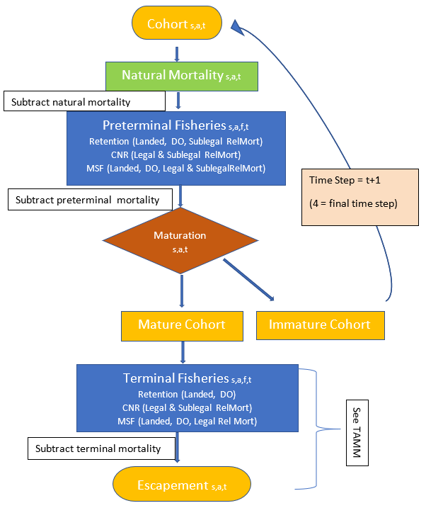

Currently, 39 stock groups are represented in Chinook FRAM. Each of these stock groups have both marked (adipose fin clipped) and unmarked components to permit assessment of mark-selective fishery regulations; therefore, the current version of FRAM has a total of 78 stock units. Each stock unit includes four age classes: 2s, 3s, 4s, and 5+.
Model stocks may represent an individual salmon stock or an aggregate of stocks from the same region. Stock units represented in FRAM were chosen based on the level of management interest, their contribution to PFMC fisheries, and the availability of representative CWT recoveries in the Regional Mark Information System (RMIS).
Chinook FRAM includes most stock groups originating from the California Central Valley (Sacramento River), Oregon coast, Columbia River, Washington coast, Puget Sound, and Southern British Columbia. However, not all stocks along the West Coast of North America are represented. Some of the stocks that are not represented in Chinook FRAM include all those originating from California with the exception of Sacramento River fall Chinook, Oregon stocks originating south of Elk River, Mid and Upper Columbia River spring Chinook, Snake River spring and summer Chinook, and Canadian stocks originating north of Georgia Strait.
FRAM includes fisheries from southeast Alaska, Canada, Puget Sound, and off the coasts of Washington, Oregon, and California. The 73 fisheries in Chinook FRAM are designed to account for most of the fishing-related impacts to modeled Chinook stocks. A unique fishery identification number and fishery name for each of the FRAM fisheries are listed in Appendix 4 for Chinook. Terminal fisheries in Chinook FRAM are aggregations of gear and management areas. FRAM can model non-selective fisheries, mark-selective fisheries, and non-retention fisheries, and also calculates fisheries-related incidental and sublegal mortalities.
Chinook FRAM consists of four time periods (Table 1). Because the fishery management cycle year (May 1 to April 30) for Chinook is out of sync with the time at which most Chinook in the model age up (October 1), Chinook FRAM both begins and ends with an October to April time step.
| Time Step | Months |
|---|---|
| 1 | Preceding Oct. - April |
| 2 | May - June |
| 3 | July - September |
| 4 | Oct. - April |
The time step structure used in FRAM represents a level of resolution that balances data availability, fishery management structure, and species-specific migration and maturation schedules. The amount of available CWT recovery data (used to estimate model parameters such as exploitation rates and maturation rates) limits the time-step resolution of the model, as these data are stratified by stock unit, age class, and fishery.
Reducing the duration of time steps decreases the number of CWT recoveries, and thereby increase the variance of the estimated parameters in those strata. Accordingly, time steps were defined at a minimum resolution needed for fishery management purposes. During each time step, a cohort undergoes natural mortality, and can be subjected to pre-terminal fisheries, maturation, and terminal fisheries.
The model has several major assumptions and limitations.
CWT fish accurately represent the modeled stock. The model parameterization depends on CWT recoveries, overwhelmingly from hatchery origin production. The model therefore assumes that the distribution and exploitation of the tagged fish in each stock unit are the same as that of untagged fish.
Stock distribution and migration is constant from year to year and is represented by the average distribution of CWT recoveries during the reference base period. Annual variability in the distribution and migration patterns of Chinook and coho salmon stocks remains an active area of research.
Each stock unit and age class is exploited as a single pool. All pre-terminal fisheries operate on the entire cohort simultaneously in each time step and all terminal fisheries operate on the mature run. Thus base period exploitation rate parameter differences may implicitly account for some within-timestep spatiotemporal patterns, but dynamics such as the sequence of interceptions in fisheries that occur in different months or at different positions along a returning migratory path are not explicitly modeled.
Length at age is stock specific and is constant from year to year. The proportion of an age class that is of legal size in size-limit fisheries is determined using the von Bertalanffy growth function. It is assumed that growth in the current model year is similar to that in the years used to estimate the growth parameters (McHugh et al. 2015).
Age-specific maturation rates vary by stock but are constant from year to year. Maturation rates are calculated on a stock, age, and time step-specific basis from cohort reconstructions during the base period calibration. This assumes maturation rates during the base period years adequately characterize those in any given model run year.
Natural mortality is constant from year to year. Rates for Chinook are age and time period specific and yield the same total annual natural mortality rate used in the Pacific Salmon Commission (PSC) Exploitation Rate Analysis (PSC xxxx).
Fish in a specific time/area/fishery stratum do not experience multiple gear encounters. The catch equations used in the model are discrete and not instantaneous, so that fish are assumed to be vulnerable to the gear only once within each time/area/fishery stratum. Potential bias in the estimates may increase with large mark-selective fisheries or longer time intervals, both of which increase the likelihood that fish will encounter a gear more than once.
The numeric inputs needed to run FRAM are stored as tables in a MSAccess database, along with tables containing resulting model outputs.
These input tables consist of - static, base period parameter values derived through the process of calibration (e.g., base period exploitation rates, natural mortality rates, growth rates) and - annual stock and fishery values including forecast or observed run sizes, catch quotas, size limits, etc.
The main FRAM outputs are estimates of mortalities (landed, mark-selective, sub-legal, non-retention, drop-off) and abundances (starting cohorts at each time step; abundances after natural mortalities, pre-terminal, and terminal fisheries).
FRAM input data consist of two main input types: base period reference data and annual data. Base period data remain constant until a new base period replaces the existing one. The principal base period inputs are stock-fishery specific exploitation rates. Other base period parameters include maturation rates, adult equivalency (AEQ) values, cohort sizes, and model stock proportions (MSP). The second input type consists of annual data that can vary with each model run, such as stock specific abundance estimates, fishery catches, size limits, etc.
CWT recoveries are used to estimate model parameters such as age-specific time/area/fishery exploitation rates and maturation rates for modeled stocks. The years from which CWT recoveries are used to estimate these parameters are referred to as the “base period.” These parameter estimates are derived through species-specific cohort analyses. Each cohort analysis is a series of procedures that use CWT recoveries along with base period catch and escapement data to “back-calculate,” or reconstruct, a pre-fishing cohort size for each stock and age group using assumed natural mortality and incidental mortality rates. See (Model Evaluation Workgroup, 2008) for a more detailed description of the cohort analysis procedures.
The model base period data for Chinook FRAM are derived from a single run reconstruction and cohort analysis based on aggregated CWT data from several consecutive brood years. Currently, the Chinook FRAM base period is calibrated using escapement, catch, and CWT recovery data (fishing calendar years 2007-2013) from brood year 2005-2008 (2007-2009 for Central Valley) CWT releases. Not all stocks represented in the Chinook FRAM have CWT recovery data available from base period brood years (e.g., White River Spring Chinook); these stocks are categorized as “out-of-base” (OOB) stocks. Available CWT data for the OOB stocks are translated to equivalent base period recovery and escapement data using known fishing effort and harvest relationships between recovery years.
Chinook FRAM uses six general types of input. Four of these input types (a, b, c, e) are submitted annually to reflect projected stock abundances and proposed fishery regulations for the current model year. The remaining two types of input (d, f) are specifications for fishery-related mortalities that can change as more information becomes available through additional data collection or studies, but typically do not change annually.
a. Cohort Abundance: For each stock unit, an annual abundance is obtained from a source that is independent of the model, typically in the form of a terminal run size (TRS). In a pre-season context these abundances come from annual forecast predictions, whereas in a post-season context the abundances are estimates of actual observed returns. For Chinook, initial stock abundance estimates are needed by age class (ages 2 through 5) and mark status.
b. Size Limits: For Chinook, minimum size limits are specified by fishery and time step where appropriate.
c. Fishery Landed Catch: The model provides three options for setting the catch in a fishery: a quota, a fishery scaler, and a harvest rate (for Puget Sound terminal fisheries only).
Quota: Catch in the fishery is set equal to a numeric value input by the user.
Fishery Scaler: The fishery is scaled relative to the effort during the reference base period using a scaler value input by the user.
Harvest rate: Using the Puget Sound TAMM, a terminal area harvest rate can be applied to terminal area fisheries.
FRAM inputs for quota and fishery scaler can be identified as either a conventional retention fishery or a mark-selective fishery and modeled accordingly. Modeling as a mark-selective fishery initiates additional calculations to estimate catches, encounters, and mortalities differently for marked and unmarked groups.
d. Release Mortality Rates: This is the mortality associated with the release of landed fish from hook-and-line and other gear types. Release mortality rates are designated by species, geographic area, fishery type, fishery size (legal vs. sublegal) and gear type (Appendix 7). Release mortality is assessed when Chinook are not retained (“non-retention” or CNR fisheries), when size limits apply, and in mark-selective fisheries. A number of studies have estimated release mortality for hook-and-line fisheries, and release mortality rates for both troll and recreational fisheries in the ocean have been formally adopted by the PFMC. For Chinook, release mortality rates differ between legal-sized fish (adult release mortality) and sublegal-sized fish (shaker release mortality). Release mortality in net fisheries with non-retention is estimated externally to FRAM and provided as an input to the model.
e. Mark-selective fisheries have two additional sources of mortality that are described as either the inappropriate retention of an unmarked fish or the release of a marked fish that consequently experiences release mortality. The failure to release an unmarked fish is a user input to the model called “Unmarked Retention Error” (or Retention Error Rate) and is the proportion of the unmarked fish encountered that are retained. The release of marked fish is a user input to the model called “Marked Recognition Error” and it is the proportion of the marked fish encountered that are released; these released marked fish are then subject to release mortality. These rates are updated annually based on fishery monitoring data.
f. Other Non-landed Mortality Rates: This includes fishing-induced mortality not associated with directly handling fish. Drop-off mortality occurs when fish in sport and troll hook-and-line fisheries drop off the hook before they are brought to the vessel yet die from hook injuries. Drop-out mortality occurs when fish in commercial net fisheries are not brought on board but die from injury as a result of being netted. For simplicity, both types are referred to as drop-off mortality in FRAM. Net drop-out mortality rates vary depending on species, net type, or timing (pre-terminal or terminal) of the fishery. In general, a 5% drop-off mortality rate is applied to the landed catch (or legal-sized encounters in fisheries modeled as mark-selective) to account for “other non-landed mortalities” in hook-and-line fisheries (see Appendix 7).
FRAM processes information through a time step loop, beginning with time step 1 and ending with time step 4 for Chinook. Within each time step, a series of five computational processes occur for each stock and age, as depicted in Figure 1: (1) determine starting cohort size, (2) removal of natural mortality, (3) removal of pre-terminal fishery mortalities, (4) maturation, and (5) removal of terminal fishery mortalities.

Figure 1. Conceptual flow chart for the Chinook FRAM model.
Process 1: Cohort abundance at the start of the time step
The starting cohort size in time step 1 is a product of two parameters: (1) the base period cohort abundance for stock s at age a (BPCohortsa) and (2) a stock and age-specific recruit scaler (StockScalersa). The recruit scaler is an annual model input.
(1)
where Cohorts, a, t = 1 is the initial cohort size for stock s, age a, during time step t=1.
The starting cohort abundance in all subsequent time steps is determined based on the remaining immature cohort from the previous time step (see process 4 below). Chinook age between time step 3 and 4, so that, for example, age 2 fish in time step 3 become age 3 fish in time step 4. Since there are no age 1 fish in Chinook FRAM, the age 2 cohort in time step 4 is the same as the age 2 cohort in time step 1.
Process 2: Natural mortality within each time step
During each time step, the stock-age cohort size at the start of the time step is decreased to account for natural mortality:
(2)
where Ma, t is the discrete natural mortality rate for age a fish during time step t (Appendix 8).
Process 3: Pre-terminal fishery mortality
The remaining cohort is then subjected to removals by pre-terminal fisheries; both landed catch and non-landed mortalities associated with each fishery are calculated. FRAM simulates fishery mortalities using different processes depending upon the type of fishery: retention fishery (non-selective), non-retention fishery, or mark-selective fishery.
3a. In regular retention fisheries (non-selective), landed catch is estimated as:
(3)
where,
The FisheryScalerf, t is the foundation for the fisher simulation algorithms. FRAM can evaluate two general types of fisheries: catch-based or effort-based. For catch-based fisheries, the FisheryScalerf, t is computed by FRAM to obtain a user-specified catch level (i.e. a quota). For effort-based fisheries, the FisheryScalerf, t is specified by the user to reflect expected effort during the model year relative to the average effort observed during the base period.
3b. Drop-off mortalities are estimated by multiplying either a) landed catch in a non-selective retention fishery, or b) legal encounters in a mark-selective fishery, by a user-specified drop-off mortality rate (DropRatef see Appendix 7)
a) Non-selective retention fishery f:(4a)
(4b)
3c. Sublegal mortalities (Shakerss, a, f, t) are calculated for the portion of the cohort that is caught but cannot be retained due to size limit restrictions:
(5)
where,
Since the FisheryScalerf, t is calculated to achieve the goals of a retention fishery, sublegal mortalities calculated as described above often do not match observations/expectations. Sublegal mortalities can be adjusted by multiplication with an encounter rate adjustment (EncRateAdjustf, a, t)/ The encounter rate adjustment is computed in FRAM by multiplying landed (legal) catch for a fishery, age, and time step with an externally estimated sublegal/legal ratio (TargetRatiof, a, t), which can be provided as a user input.
(6)
(7)
where,
3d. Chinook non-retention (CNR) mortalities are estimated for time periods when fishing is allowed, but the retention of Chinook is prohibited.
Chinook non-retention mortalities are typically calculated using shaker and adult release mortality rates (Appendix 7) and external estimates of either total adult encounters or legal and sublegal encounters. Several other methods exist in the modeling framework for Chinook (relative to the level of open versus non-retention effort within a time step) but are rarely used.
3e. Mark-selective fisheries (MSF) require additional computations to calculate both the landed catch and the mortalities due to the release of fish.
To simplify calculations, the PV and the SHRS are excluded from the below calculations:
For marked stock units, the landed catch is calculated using an additional term to account for marked-recognition error (the release of a marked fish) and is fishery and time step specific (mref, t):
(8a)
For unmarked stock units, the landed catch is calculated using an additional term to account for unmarked retention error (the retention of an unmarked fish) and is fishery and time step specific (uref, t):
(8b)
Equations used to calculate adult release mortalities (AdultRelMort) in mark-selective fisheries must account for marked recognition (mre) and unmarked retention error (ure) for marked and unmarked stock units and utilize fishery and time step-specific release mortality rates (sfmf, t) (Appendix 7).
(9a) Marked:
(9b) UnMarked:
Computations for Chinook mark-selective fisheries must also account for sublegal mortality, which does not differ between marked and unmarked components (due to increased complexity, those equations are not presented here). Drop-off mortalities in mark-selective fisheries are calculated by multiplying the drop-off mortality rate with the number of legal encounters, as described in process 3b above.
3f. All pre-terminal fishery mortalities in time step t for stock s by age a are totaled (TotMort) and the size of the cohort is reduced accordingly.
(10)
The remaining cohort is then calculated as:
(11)
Fishery mortality in pre-terminal Chinook fisheries in FRAM can also be expressed in terms of adult equivalents (AEQ), which is the number of fish that would have survived to maturity and escaped to spawn in the absence of fishing. The AEQ factors adjust for the natural mortality that would have occurred between the time/age the fish were caught and the time/age that they would have matured. All age-5 Chinook in the mature time step and terminal fisheries have an AEQ factor of 1. The AEQ factor is calculated using maturation rates from the reference base period (MatRates, a, t) as:
(11a) For time steps 1 and 2:
(11b) For time step 3:
AEQ = 1 for Chinook terminal fisheries, regardless of age.
(12)